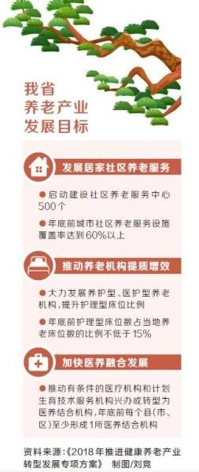

子女做好一碗汤后端到父母家还没有凉，就是最好的居住距离。然而在现实生活中，由于工作、婚姻、住房等诸多原因，“一碗汤的距离”往往难以实现。
怎么办?社区居家养老来帮忙。7月25日，省发展改革委下发《2018年推进健康养老产业转型发展专项方案》(以下简称《方案》)，力求通过打造“15分钟城市社区居家养老服务圈”，来破解各类养老难题。
一盼“没有子女照顾，也能三餐无忧”
回应：试点送餐到家，解决生活难题
“身边没有子女照顾，要是能衣食无忧就好了。”这是许多老年人共同的期盼。
“老年人在家养老的主要问题是一日三餐。”许昌市魏都区文峰街道办事处河西社区党支部书记刘建华说，很多老年人吃饭都是凑合，有时候做一次饭能吃好几顿，不利于身体健康。为回应老年人期盼，河西社区托老站为老年人提供集中就餐服务，实现在家门口吃得营养、放心，还经济实惠。
更让人欣喜的是，许昌、郑州、洛阳作为全省居家和社区养老服务试点城市，正在积极探索开展送餐到家服务。《方案》则进一步指出，试点城市要依托社区(行政村)养老服务中心和社区服务站点，统筹整合家政、物业、餐饮、医疗等为老服务资源，提供紧急呼叫、家政预约、健康咨询、物品代购、服务缴费等适合老年人的服务项目，解决独居老年人的实际生活问题。
二盼“渴望和别人多交流，融入社会”
回应：搭建交流平台，提供个性化服务
郑州市金水区丰产路街道姚砦社区，67岁的孙阿姨正在社区养老服务中心的活动室作画。“老年人最怕孤独，渴望和别人多交流，融入社会。社区养老服务中心给我们提供了一个很好的平台。”她说。
像姚砦社区这样的养老服务中心，金水区共有71个。许多老年人在这里看报纸、拉二胡、下象棋，十分热闹。“目前我国各类养老模式中，居家和社区养老被视为最符合养老传统，最契合老年人心理需求的模式。”河南大学教育科学学院博士生导师王晋表示，应该建立更多的可供老年人交流的平台，让他们做一些自己感兴趣的事情。
《方案》指出，我省鼓励养老机构与管理经验丰富、品牌影响广泛的专业养老服务企业(机构)开展运营合作，围绕适合老年人的衣、食、住、行、医、文化娱乐等需求，提供符合标准、多样化、个性化的养老服务，提高养老服务供给质量和管理水平。
三盼“医疗服务主动上门，随叫随到”
回应：65岁以上老人健康管理率将达到60%
相比机构养老，居家社区养老服务费用相对便宜，主要以提供生活保障服务为主。但记者在采访中发现，许多老年人对专业化的医疗服务更加关注，希望能得到“主动上门，随叫随到”的养老医疗服务。
2017年7月，家庭医生签约服务在我省全面推开，目前已签约人数4500多万，覆盖了48%的常住人口。“我们优先服务在社区居家养老的老年人。”省卫计委基层卫生处调研员戴能光说。
现实情况是，医疗资源供应远远满足不了养老服务需求。为解决居家和社区养老存在护理人员不足、护理人员水平较低的问题，《方案》要求我省推进基层医疗机构与居家社区养老相结合，将养老机构内设医疗机构及其医护人员纳入卫生计生部门统一指导范围，今年年底前，65岁以上老年人健康管理率将达到60%。(本报记者 栾姗)
编辑：赵丹
 微信好友
微信好友 QQ好友
QQ好友 QQ空间
QQ空间 新浪微博
新浪微博 腾讯微博
腾讯微博